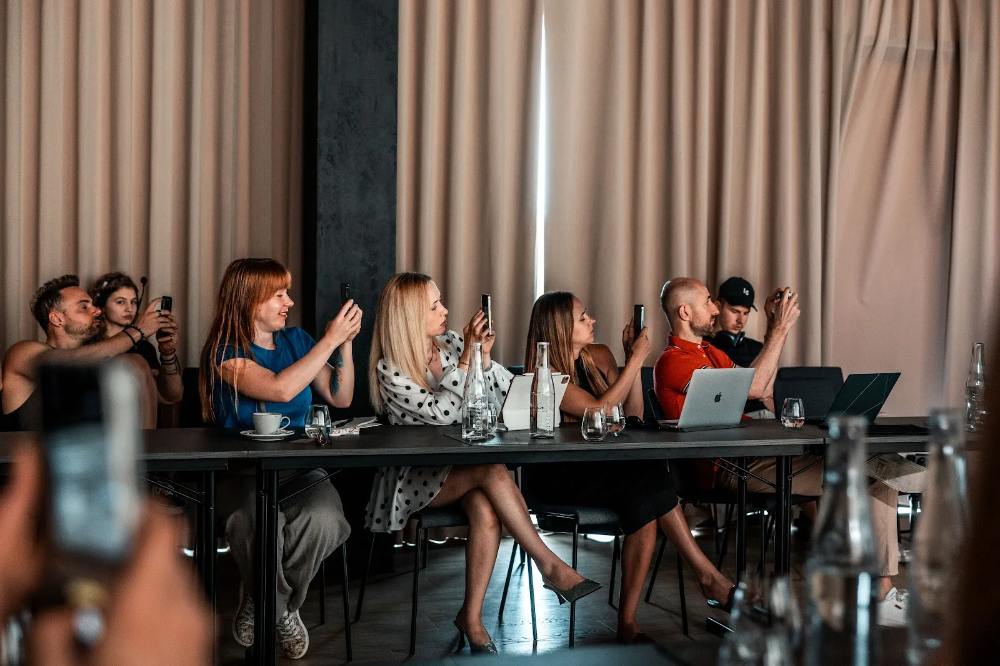
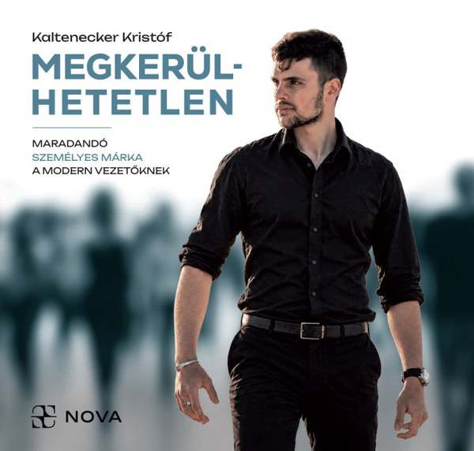

Az egyik legkedvesebb partnerünk a Hormonmentes.hu csapata. Cserháti-Herold Jankával arról beszélgetünk, hogyan lett a több éven át tartó, konzisztens márkaépítésből 125 ezer feliratkozó.

A beszélgetést felvettük, a kész adás hamarosan itt lesz. Nézz vissza pár hét múlva, vagy kövesd a Nova csatornáit.
Az epizód vágás alatt van, a linkek hamarosan élesednek.
Miről szól a beszélgetés
A hosszú távon letett érték az ő oldalukról olyan filozófiával és tudatossággal párosul, amellyel pontosan beépítik mindazt, amit a Stratégia fejezet középformátumról szóló része megoszt: a relevancia és az azonosulás pozicionálásától az ígéret és a leszállítás kapcsolatáig.
Pont jót ígérnek ahhoz, hogy az érdeklődő közönség relevánsnak találja a videót, és végig is nézze. Az eredmény 125 ezer fölötti feliratkozó. Az ügynökségi munkánk egyik legfontosabb példája erre az egész mechanikára. A kész adás kivonata ide kerül, amint az epizód elkészül.

A Stratégia fejezet címe: Válaszd a nehezebb utat. A jövő, amelyet elképzeltél, olyan döntéseket is kérhet tőled, amelyeket a jelenlegi sikereid alapján még semmi nem indokol.
A stratégia itt nem a tervezés művészete, hanem az önuralomé: újra és újra a nehezebb utat választani, és pontosan tudni, miért érheti meg.
Nem kell ma az egész utat belátnod. Elég, ha tudod, miért indulsz el, és megteszed azt a következő lépést, amelyet már most tisztán látsz.